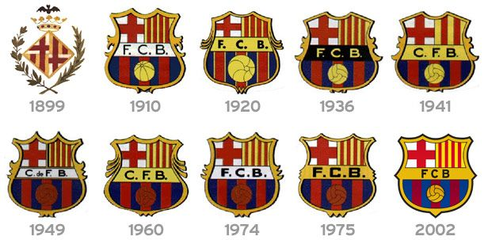
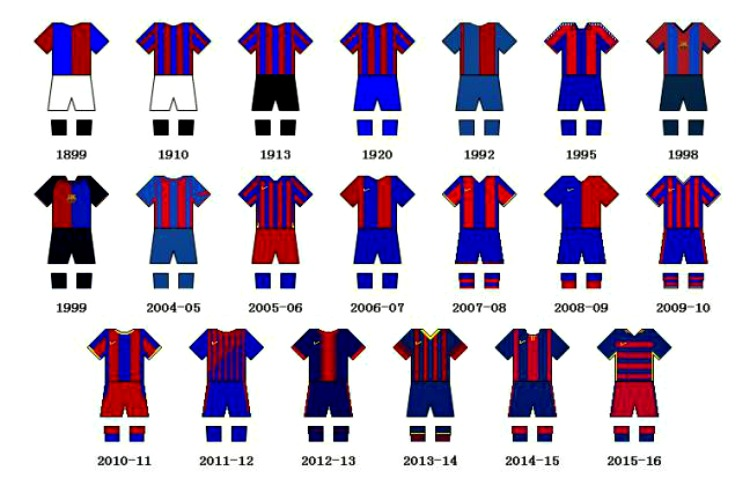
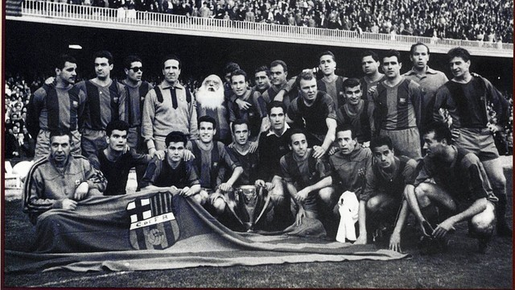
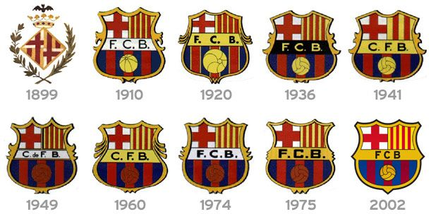
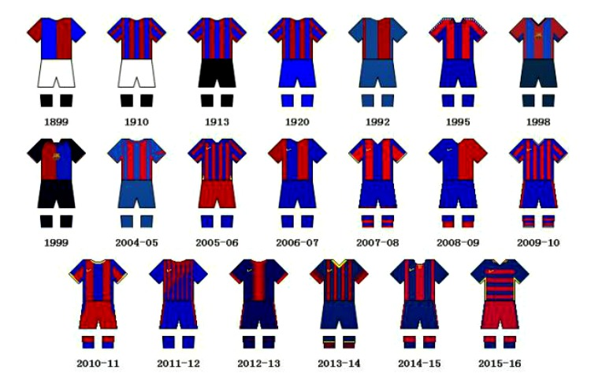
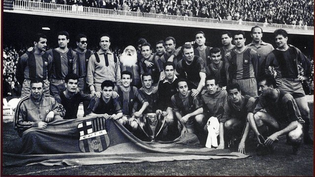

FC BARCELONA
ISTORIE
Fondat în 1899 de un grup de fotbaliști elvețieni, britanici și catalani conduși de Joan Gamper, clubul a devenit un simbol al culturii catalane și al naționalismului catalan, motto-ul său fiind prin urmare „Barça este mai mult decât un club” (catalană: FC Barcelona - Més que un club). Imnul oficial al Barcelonei este „Cant del Barça”, scris de Jaume Picas și Josep Maria Espinàs. Spre deosebire de multe alte cluburi, suporterii dețin și conduc Barcelona. Este al doilea cel mai bogat club de fotbal în ceea ce privește veniturile, având o cifră de afaceri anuală de 450 milioane €. FC Barcelona are o îndelungată rivalitate cu Real Madrid, meciurile disputate între cele două echipe fiind cunoscute sub numele de „El Clásico”.
 





"Echipa de vis"
Josep Lluís Núñez a devenit președintele lui FC Barcelona în 1978, conducând clubul într-o perioadă de creștere socială și economică neprecedată.
Superstarul argentinian Diego Maradona a semnat pentru un onorariu record de la Boca Juniors. Problemele din afara sportului ale președintelui clubului au dus la transferul său la SSC Napoli. Surprinzător, echipa s-a îmbunătățit și fără starul său, odată cu revoluționarea jocului său prin tacticile de pressing aduse de antrenorul englez Terry Venables.
Zeci de titluri au fost câștigate mai departe, nu doar în domeniul fotbalistic, acordându-se astfel atenție și altor sporturi.
Între anii 1990 și 1994, Echipa de vis a lui Johan Cruyff, jucând un sistem de Fotbal total, a câștigat patru titluri de campioană a ligii consecutive și pentru prima oară în istorie Liga Campionilor UEFA (1992). 11 trofee au fost câștigate în timpul domniei lui Cruyff ca antrenor.